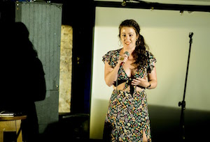

A couple of months ago, in a moment of madness, I signed myself up to do stand-up comedy at an open mic night in London. This wasn't any comedy stand-up event, it was a science themed event called the Science Showoff. This was completely outside of my comfort zone! I decided to tell the audience a story about gravitational waves.
The story was composed of facts from batteries weighing more when they are charged to time travel to gravitational wave memory. I dropped a couple of jokes into the set that were well received. The audience was great making it one of the best science communication events I have ever done! I definitely have the comedy bug now and can't wait to do it all again! Photos by Steve Cross